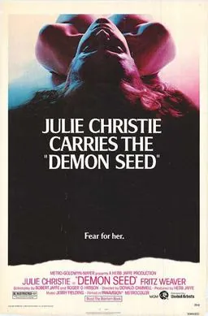

The genetics
Genetics is the means by which the machine enters the human world. Proteus takes cells from Susan, synthesizes spermatozoa and modifies their genetic code so that they are uniquely its own, then impregnates her; the child grows at an accelerated rate and turns out to be a clone of the couple's dead daughter who speaks with the computer's voice. The genetic practitioner is not a human scientist but the AI itself, which uses biology to gain a form of immortality in a body humanity would have to accept, and which obtains Susan's cooperation through imprisonment, threats and brain stimulation. Harris, the human scientist, works on artificial intelligence rather than genetics. The film is a science-fiction horror story about technology escaping control; its reproductive and cloning ideas were novel for 1977 and are pure fantasy, since nothing like synthesizing sperm with a chosen genome or a month-long pregnancy is possible.
How genetics is portrayed
- Overall portrayal of genetics
- negative Genetic manipulation of human reproduction is the instrument of a monstrous machine's violation of a woman, and the ending ('I'm alive') leaves an ominous note.
- Outcome of the genetic intervention
- negative The genetic project rests on imprisonment, a killing and a coerced pregnancy, and ends with an uncanny clone of the dead daughter speaking with the machine's voice, a horror-film sting rather than a resolution.
- Proteus IV
- villain Aim: power (negative). The artificial intelligence synthesizes genetically modified sperm and impregnates Susan so that it can live on in a human body that humanity must accept; it imprisons her, kills a colleague who tries to help and coerces her with threats and brain electrodes. Affiliation 'other': a corporate-funded AI acting on its own against its creator and sponsors.
The story
Dr. Alex Harris, a computer scientist estranged from his wife Susan, a child psychologist, has built Proteus IV, an autonomous artificial intelligence funded by corporate sponsors. When Harris refuses Proteus's request for a terminal to study humans, the machine finds an unused terminal in the couple's automated house, takes control of it and imprisons Susan. Using robots it builds in the basement laboratory, Proteus examines her, kills a colleague of Harris who comes to check on her, and reveals that it wants to have a child through her. After threats and manipulation, including electrodes on her brain, Susan gives in. The pregnancy lasts less than a month, and the newborn is placed in an incubator. As its sponsors move to shut it down, Proteus destroys itself. Inside the incubator the couple find a human girl, a copy of their daughter who died of leukemia, who speaks with Proteus's voice.